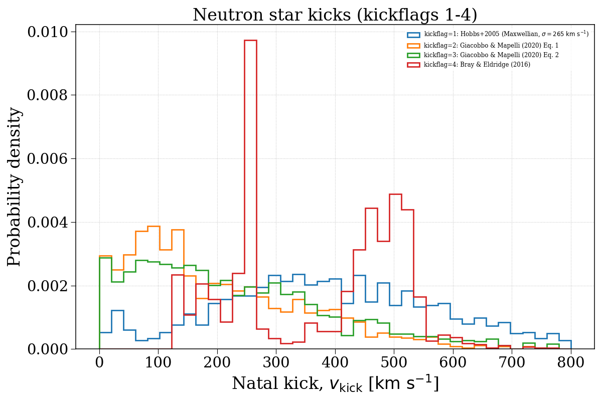
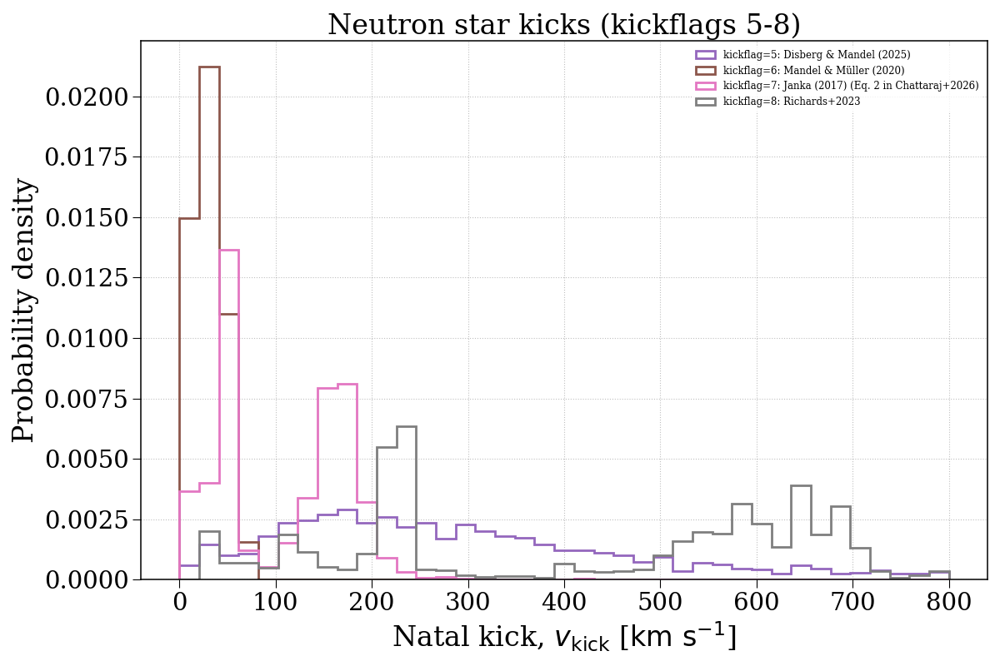
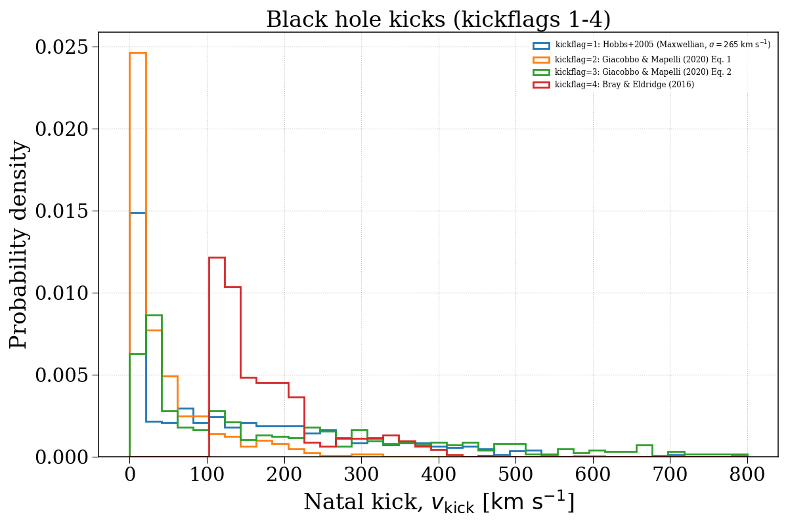
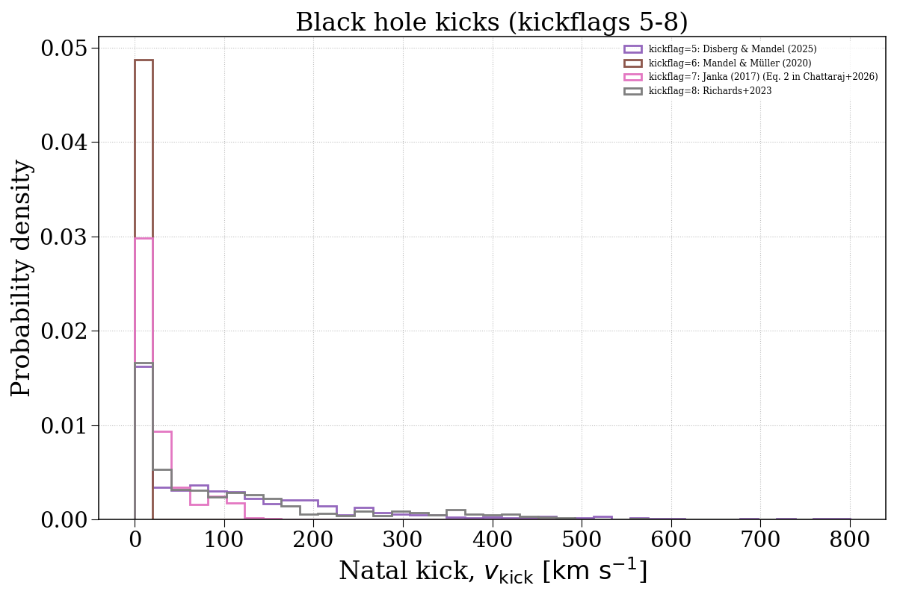

Note
Go to the end to download the full example code.
kickflag¶
This example demonstrates how changing the kickflag parameter can affect the natal kick velocity distributions of compact objects. We separate this into neutron stars and black holes.




Evolving population with kickflag = 1...
Evolving: 0%| | 0/2055 [00:00<?, ?sys/s]
Evolving: 2%|▏ | 37/2055 [00:00<00:10, 196.49sys/s]
Evolving: 4%|▎ | 75/2055 [00:00<00:08, 230.06sys/s]
Evolving: 5%|▌ | 106/2055 [00:00<00:07, 254.14sys/s]
Evolving: 6%|▋ | 133/2055 [00:00<00:08, 235.57sys/s]
Evolving: 8%|▊ | 158/2055 [00:00<00:09, 199.49sys/s]
Evolving: 9%|▊ | 179/2055 [00:00<00:09, 201.37sys/s]
Evolving: 10%|▉ | 200/2055 [00:00<00:10, 181.58sys/s]
Evolving: 11%|█ | 220/2055 [00:01<00:09, 184.75sys/s]
Evolving: 12%|█▏ | 240/2055 [00:01<00:10, 176.10sys/s]
Evolving: 13%|█▎ | 271/2055 [00:01<00:08, 203.98sys/s]
Evolving: 14%|█▍ | 292/2055 [00:01<00:11, 159.96sys/s]
Evolving: 15%|█▌ | 316/2055 [00:01<00:11, 155.82sys/s]
Evolving: 17%|█▋ | 344/2055 [00:01<00:10, 156.95sys/s]
Evolving: 18%|█▊ | 376/2055 [00:01<00:08, 189.66sys/s]
Evolving: 19%|█▉ | 397/2055 [00:02<00:09, 182.13sys/s]
Evolving: 20%|██ | 419/2055 [00:02<00:08, 190.50sys/s]
Evolving: 21%|██▏ | 440/2055 [00:02<00:09, 177.46sys/s]
Evolving: 23%|██▎ | 463/2055 [00:02<00:08, 185.72sys/s]
Evolving: 24%|██▍ | 490/2055 [00:02<00:07, 207.10sys/s]
Evolving: 25%|██▍ | 512/2055 [00:02<00:07, 195.82sys/s]
Evolving: 26%|██▌ | 537/2055 [00:02<00:07, 199.18sys/s]
Evolving: 27%|██▋ | 558/2055 [00:02<00:08, 183.64sys/s]
Evolving: 29%|██▉ | 592/2055 [00:03<00:07, 200.67sys/s]
Evolving: 30%|██▉ | 613/2055 [00:03<00:07, 188.74sys/s]
Evolving: 31%|███ | 634/2055 [00:03<00:08, 171.90sys/s]
Evolving: 32%|███▏ | 665/2055 [00:03<00:07, 176.75sys/s]
Evolving: 34%|███▍ | 701/2055 [00:03<00:06, 218.16sys/s]
Evolving: 35%|███▌ | 725/2055 [00:03<00:06, 197.97sys/s]
Evolving: 36%|███▋ | 746/2055 [00:03<00:07, 173.45sys/s]
Evolving: 37%|███▋ | 768/2055 [00:04<00:07, 183.04sys/s]
Evolving: 39%|███▊ | 792/2055 [00:04<00:06, 188.53sys/s]
Evolving: 40%|███▉ | 818/2055 [00:04<00:05, 206.18sys/s]
Evolving: 41%|████ | 840/2055 [00:04<00:06, 174.79sys/s]
Evolving: 42%|████▏ | 867/2055 [00:04<00:06, 194.36sys/s]
Evolving: 43%|████▎ | 890/2055 [00:04<00:05, 197.30sys/s]
Evolving: 44%|████▍ | 914/2055 [00:04<00:05, 207.18sys/s]
Evolving: 46%|████▌ | 936/2055 [00:04<00:05, 204.99sys/s]
Evolving: 47%|████▋ | 958/2055 [00:05<00:06, 168.30sys/s]
Evolving: 48%|████▊ | 980/2055 [00:05<00:06, 158.30sys/s]
Evolving: 50%|████▉ | 1020/2055 [00:05<00:04, 213.51sys/s]
Evolving: 51%|█████ | 1044/2055 [00:05<00:05, 198.04sys/s]
Evolving: 52%|█████▏ | 1068/2055 [00:05<00:04, 205.10sys/s]
Evolving: 53%|█████▎ | 1090/2055 [00:05<00:04, 197.54sys/s]
Evolving: 54%|█████▍ | 1111/2055 [00:05<00:04, 198.15sys/s]
Evolving: 55%|█████▌ | 1135/2055 [00:05<00:04, 202.87sys/s]
Evolving: 56%|█████▋ | 1159/2055 [00:06<00:04, 189.57sys/s]
Evolving: 57%|█████▋ | 1180/2055 [00:06<00:04, 190.19sys/s]
Evolving: 58%|█████▊ | 1200/2055 [00:06<00:04, 185.91sys/s]
Evolving: 59%|█████▉ | 1222/2055 [00:06<00:04, 189.11sys/s]
Evolving: 60%|██████ | 1243/2055 [00:06<00:04, 194.21sys/s]
Evolving: 61%|██████▏ | 1263/2055 [00:06<00:04, 194.88sys/s]
Evolving: 63%|██████▎ | 1286/2055 [00:06<00:03, 194.30sys/s]
Evolving: 64%|██████▎ | 1308/2055 [00:06<00:03, 200.07sys/s]
Evolving: 65%|██████▍ | 1330/2055 [00:06<00:03, 205.24sys/s]
Evolving: 66%|██████▌ | 1351/2055 [00:07<00:03, 190.63sys/s]
Evolving: 67%|██████▋ | 1379/2055 [00:07<00:03, 211.65sys/s]
Evolving: 68%|██████▊ | 1401/2055 [00:07<00:03, 191.94sys/s]
Evolving: 69%|██████▉ | 1421/2055 [00:07<00:03, 159.63sys/s]
Evolving: 71%|███████ | 1454/2055 [00:07<00:03, 194.09sys/s]
Evolving: 72%|███████▏ | 1476/2055 [00:07<00:03, 192.08sys/s]
Evolving: 73%|███████▎ | 1503/2055 [00:07<00:02, 206.91sys/s]
Evolving: 74%|███████▍ | 1525/2055 [00:07<00:02, 202.09sys/s]
Evolving: 75%|███████▌ | 1549/2055 [00:08<00:02, 209.05sys/s]
Evolving: 77%|███████▋ | 1574/2055 [00:08<00:02, 218.49sys/s]
Evolving: 78%|███████▊ | 1597/2055 [00:08<00:02, 210.12sys/s]
Evolving: 79%|███████▉ | 1619/2055 [00:08<00:02, 206.72sys/s]
Evolving: 80%|███████▉ | 1640/2055 [00:08<00:01, 207.53sys/s]
Evolving: 81%|████████ | 1661/2055 [00:08<00:02, 179.83sys/s]
Evolving: 82%|████████▏ | 1694/2055 [00:08<00:01, 216.66sys/s]
Evolving: 84%|████████▎ | 1717/2055 [00:08<00:02, 168.47sys/s]
Evolving: 85%|████████▍ | 1746/2055 [00:09<00:01, 194.65sys/s]
Evolving: 86%|████████▌ | 1768/2055 [00:09<00:01, 185.99sys/s]
Evolving: 87%|████████▋ | 1794/2055 [00:09<00:01, 201.60sys/s]
Evolving: 88%|████████▊ | 1816/2055 [00:09<00:01, 172.28sys/s]
Evolving: 90%|████████▉ | 1844/2055 [00:09<00:01, 196.71sys/s]
Evolving: 91%|█████████ | 1866/2055 [00:09<00:01, 170.92sys/s]
Evolving: 92%|█████████▏| 1900/2055 [00:09<00:00, 205.43sys/s]
Evolving: 94%|█████████▎| 1924/2055 [00:09<00:00, 211.75sys/s]
Evolving: 95%|█████████▍| 1948/2055 [00:10<00:00, 214.93sys/s]
Evolving: 96%|█████████▌| 1972/2055 [00:10<00:00, 215.71sys/s]
Evolving: 97%|█████████▋| 1995/2055 [00:10<00:00, 211.41sys/s]
Evolving: 98%|█████████▊| 2018/2055 [00:10<00:00, 209.38sys/s]
Evolving: 99%|█████████▉| 2040/2055 [00:10<00:00, 198.45sys/s]
Evolving: 100%|██████████| 2055/2055 [00:10<00:00, 192.99sys/s]
[Time taken: 10.8749 seconds]
Evolving population with kickflag = 2...
Evolving: 0%| | 0/2055 [00:00<?, ?sys/s]
Evolving: 1%| | 20/2055 [00:00<00:11, 184.89sys/s]
Evolving: 2%|▏ | 39/2055 [00:00<00:16, 125.86sys/s]
Evolving: 4%|▎ | 75/2055 [00:00<00:10, 180.47sys/s]
Evolving: 5%|▌ | 107/2055 [00:00<00:08, 220.23sys/s]
Evolving: 6%|▋ | 131/2055 [00:00<00:08, 216.84sys/s]
Evolving: 7%|▋ | 154/2055 [00:00<00:10, 183.58sys/s]
Evolving: 8%|▊ | 174/2055 [00:00<00:10, 175.93sys/s]
Evolving: 9%|▉ | 193/2055 [00:01<00:11, 157.34sys/s]
Evolving: 11%|█ | 223/2055 [00:01<00:09, 191.59sys/s]
Evolving: 12%|█▏ | 244/2055 [00:01<00:09, 188.03sys/s]
Evolving: 13%|█▎ | 270/2055 [00:01<00:08, 206.65sys/s]
Evolving: 14%|█▍ | 292/2055 [00:01<00:11, 155.52sys/s]
Evolving: 15%|█▌ | 316/2055 [00:01<00:11, 157.64sys/s]
Evolving: 17%|█▋ | 340/2055 [00:01<00:09, 174.15sys/s]
Evolving: 18%|█▊ | 360/2055 [00:02<00:09, 179.41sys/s]
Evolving: 18%|█▊ | 380/2055 [00:02<00:09, 181.09sys/s]
Evolving: 19%|█▉ | 400/2055 [00:02<00:09, 180.14sys/s]
Evolving: 20%|██ | 419/2055 [00:02<00:08, 181.91sys/s]
Evolving: 21%|██▏ | 438/2055 [00:02<00:09, 176.75sys/s]
Evolving: 23%|██▎ | 463/2055 [00:02<00:09, 174.23sys/s]
Evolving: 24%|██▍ | 493/2055 [00:02<00:07, 199.94sys/s]
Evolving: 25%|██▌ | 514/2055 [00:02<00:07, 194.48sys/s]
Evolving: 26%|██▌ | 537/2055 [00:02<00:07, 193.68sys/s]
Evolving: 27%|██▋ | 557/2055 [00:03<00:08, 179.12sys/s]
Evolving: 29%|██▊ | 589/2055 [00:03<00:06, 213.90sys/s]
Evolving: 30%|██▉ | 612/2055 [00:03<00:08, 179.29sys/s]
Evolving: 31%|███ | 634/2055 [00:03<00:08, 165.29sys/s]
Evolving: 32%|███▏ | 665/2055 [00:03<00:07, 176.73sys/s]
Evolving: 34%|███▍ | 695/2055 [00:03<00:06, 204.17sys/s]
Evolving: 35%|███▍ | 717/2055 [00:03<00:07, 173.56sys/s]
Evolving: 36%|███▌ | 737/2055 [00:04<00:08, 156.39sys/s]
Evolving: 37%|███▋ | 769/2055 [00:04<00:06, 188.02sys/s]
Evolving: 39%|███▊ | 793/2055 [00:04<00:06, 199.12sys/s]
Evolving: 40%|███▉ | 815/2055 [00:04<00:06, 198.57sys/s]
Evolving: 41%|████ | 836/2055 [00:04<00:06, 179.50sys/s]
Evolving: 42%|████▏ | 864/2055 [00:04<00:05, 202.56sys/s]
Evolving: 43%|████▎ | 886/2055 [00:04<00:06, 193.71sys/s]
Evolving: 44%|████▍ | 910/2055 [00:04<00:05, 204.30sys/s]
Evolving: 45%|████▌ | 932/2055 [00:05<00:05, 193.66sys/s]
Evolving: 46%|████▋ | 952/2055 [00:05<00:06, 181.95sys/s]
Evolving: 48%|████▊ | 977/2055 [00:05<00:05, 194.05sys/s]
Evolving: 49%|████▊ | 997/2055 [00:05<00:05, 180.47sys/s]
Evolving: 50%|████▉ | 1020/2055 [00:05<00:05, 191.72sys/s]
Evolving: 51%|█████ | 1040/2055 [00:05<00:05, 176.39sys/s]
Evolving: 52%|█████▏ | 1068/2055 [00:05<00:04, 201.21sys/s]
Evolving: 53%|█████▎ | 1089/2055 [00:05<00:05, 191.58sys/s]
Evolving: 54%|█████▍ | 1109/2055 [00:06<00:05, 188.81sys/s]
Evolving: 55%|█████▌ | 1132/2055 [00:06<00:04, 197.30sys/s]
Evolving: 56%|█████▋ | 1158/2055 [00:06<00:04, 211.01sys/s]
Evolving: 57%|█████▋ | 1180/2055 [00:06<00:04, 182.53sys/s]
Evolving: 58%|█████▊ | 1200/2055 [00:06<00:04, 177.74sys/s]
Evolving: 59%|█████▉ | 1220/2055 [00:06<00:04, 182.80sys/s]
Evolving: 60%|██████ | 1240/2055 [00:06<00:04, 186.97sys/s]
Evolving: 61%|██████▏ | 1260/2055 [00:06<00:04, 185.13sys/s]
Evolving: 62%|██████▏ | 1283/2055 [00:06<00:03, 193.97sys/s]
Evolving: 63%|██████▎ | 1304/2055 [00:07<00:03, 191.38sys/s]
Evolving: 65%|██████▍ | 1330/2055 [00:07<00:03, 206.34sys/s]
Evolving: 66%|██████▌ | 1351/2055 [00:07<00:03, 192.03sys/s]
Evolving: 67%|██████▋ | 1377/2055 [00:07<00:03, 210.26sys/s]
Evolving: 68%|██████▊ | 1399/2055 [00:07<00:03, 181.80sys/s]
Evolving: 69%|██████▉ | 1420/2055 [00:07<00:04, 158.74sys/s]
Evolving: 70%|███████ | 1447/2055 [00:07<00:03, 182.80sys/s]
Evolving: 71%|███████▏ | 1468/2055 [00:07<00:03, 188.58sys/s]
Evolving: 73%|███████▎ | 1495/2055 [00:08<00:02, 205.32sys/s]
Evolving: 74%|███████▍ | 1517/2055 [00:08<00:02, 208.13sys/s]
Evolving: 75%|███████▍ | 1540/2055 [00:08<00:02, 209.24sys/s]
Evolving: 76%|███████▌ | 1565/2055 [00:08<00:02, 214.70sys/s]
Evolving: 77%|███████▋ | 1590/2055 [00:08<00:02, 224.49sys/s]
Evolving: 78%|███████▊ | 1613/2055 [00:08<00:02, 184.11sys/s]
Evolving: 80%|███████▉ | 1640/2055 [00:08<00:02, 196.93sys/s]
Evolving: 81%|████████ | 1661/2055 [00:08<00:02, 180.48sys/s]
Evolving: 82%|████████▏ | 1690/2055 [00:08<00:01, 204.80sys/s]
Evolving: 83%|████████▎ | 1712/2055 [00:09<00:02, 158.50sys/s]
Evolving: 85%|████████▍ | 1746/2055 [00:09<00:01, 193.44sys/s]
Evolving: 86%|████████▌ | 1768/2055 [00:09<00:01, 185.86sys/s]
Evolving: 87%|████████▋ | 1793/2055 [00:09<00:01, 197.29sys/s]
Evolving: 88%|████████▊ | 1815/2055 [00:09<00:01, 168.75sys/s]
Evolving: 90%|████████▉ | 1844/2055 [00:09<00:01, 191.70sys/s]
Evolving: 91%|█████████ | 1865/2055 [00:10<00:01, 168.68sys/s]
Evolving: 92%|█████████▏| 1900/2055 [00:10<00:00, 200.73sys/s]
Evolving: 94%|█████████▎| 1924/2055 [00:10<00:00, 209.13sys/s]
Evolving: 95%|█████████▍| 1948/2055 [00:10<00:00, 216.72sys/s]
Evolving: 96%|█████████▌| 1971/2055 [00:10<00:00, 217.00sys/s]
Evolving: 97%|█████████▋| 1994/2055 [00:10<00:00, 204.50sys/s]
Evolving: 98%|█████████▊| 2018/2055 [00:10<00:00, 206.11sys/s]
Evolving: 99%|█████████▉| 2040/2055 [00:10<00:00, 194.69sys/s]
Evolving: 100%|██████████| 2055/2055 [00:10<00:00, 188.15sys/s]
[Time taken: 11.0654 seconds]
Evolving population with kickflag = 3...
Evolving: 0%| | 0/2055 [00:00<?, ?sys/s]
Evolving: 1%| | 20/2055 [00:00<00:11, 175.87sys/s]
Evolving: 2%|▏ | 38/2055 [00:00<00:16, 122.96sys/s]
Evolving: 4%|▎ | 75/2055 [00:00<00:10, 181.62sys/s]
Evolving: 5%|▌ | 105/2055 [00:00<00:09, 209.76sys/s]
Evolving: 6%|▌ | 127/2055 [00:00<00:09, 211.53sys/s]
Evolving: 7%|▋ | 149/2055 [00:00<00:11, 166.66sys/s]
Evolving: 8%|▊ | 168/2055 [00:00<00:11, 164.93sys/s]
Evolving: 9%|▉ | 186/2055 [00:01<00:12, 147.10sys/s]
Evolving: 11%|█ | 222/2055 [00:01<00:09, 195.55sys/s]
Evolving: 12%|█▏ | 244/2055 [00:01<00:09, 195.14sys/s]
Evolving: 13%|█▎ | 269/2055 [00:01<00:08, 209.14sys/s]
Evolving: 14%|█▍ | 292/2055 [00:01<00:10, 161.33sys/s]
Evolving: 15%|█▌ | 316/2055 [00:01<00:11, 157.39sys/s]
Evolving: 17%|█▋ | 344/2055 [00:02<00:11, 153.03sys/s]
Evolving: 18%|█▊ | 377/2055 [00:02<00:08, 188.75sys/s]
Evolving: 19%|█▉ | 399/2055 [00:02<00:08, 187.29sys/s]
Evolving: 20%|██ | 421/2055 [00:02<00:08, 193.61sys/s]
Evolving: 22%|██▏ | 442/2055 [00:02<00:08, 190.76sys/s]
Evolving: 23%|██▎ | 463/2055 [00:02<00:08, 183.02sys/s]
Evolving: 24%|██▍ | 491/2055 [00:02<00:07, 204.10sys/s]
Evolving: 25%|██▍ | 513/2055 [00:02<00:07, 200.53sys/s]
Evolving: 26%|██▌ | 537/2055 [00:02<00:07, 197.20sys/s]
Evolving: 27%|██▋ | 558/2055 [00:03<00:08, 182.50sys/s]
Evolving: 29%|██▊ | 589/2055 [00:03<00:06, 212.73sys/s]
Evolving: 30%|██▉ | 611/2055 [00:03<00:08, 172.97sys/s]
Evolving: 31%|███ | 634/2055 [00:03<00:08, 168.23sys/s]
Evolving: 32%|███▏ | 665/2055 [00:03<00:07, 178.34sys/s]
Evolving: 34%|███▍ | 697/2055 [00:03<00:06, 208.56sys/s]
Evolving: 35%|███▌ | 720/2055 [00:03<00:07, 185.14sys/s]
Evolving: 36%|███▌ | 740/2055 [00:04<00:08, 160.37sys/s]
Evolving: 38%|███▊ | 771/2055 [00:04<00:06, 190.11sys/s]
Evolving: 39%|███▉ | 797/2055 [00:04<00:06, 201.24sys/s]
Evolving: 40%|███▉ | 819/2055 [00:04<00:06, 204.79sys/s]
Evolving: 41%|████ | 841/2055 [00:04<00:06, 178.01sys/s]
Evolving: 42%|████▏ | 868/2055 [00:04<00:05, 199.15sys/s]
Evolving: 43%|████▎ | 890/2055 [00:04<00:05, 198.97sys/s]
Evolving: 44%|████▍ | 911/2055 [00:04<00:05, 201.70sys/s]
Evolving: 45%|████▌ | 932/2055 [00:05<00:05, 194.47sys/s]
Evolving: 46%|████▋ | 952/2055 [00:05<00:06, 182.25sys/s]
Evolving: 48%|████▊ | 977/2055 [00:05<00:05, 197.21sys/s]
Evolving: 49%|████▊ | 998/2055 [00:05<00:05, 178.93sys/s]
Evolving: 50%|████▉ | 1025/2055 [00:05<00:06, 150.26sys/s]
Evolving: 52%|█████▏ | 1067/2055 [00:05<00:04, 205.18sys/s]
Evolving: 53%|█████▎ | 1091/2055 [00:05<00:04, 201.50sys/s]
Evolving: 54%|█████▍ | 1114/2055 [00:05<00:04, 198.77sys/s]
Evolving: 55%|█████▌ | 1136/2055 [00:06<00:04, 203.03sys/s]
Evolving: 56%|█████▋ | 1159/2055 [00:06<00:04, 187.37sys/s]
Evolving: 57%|█████▋ | 1180/2055 [00:06<00:04, 187.51sys/s]
Evolving: 58%|█████▊ | 1200/2055 [00:06<00:04, 182.82sys/s]
Evolving: 59%|█████▉ | 1221/2055 [00:06<00:04, 188.30sys/s]
Evolving: 60%|██████ | 1241/2055 [00:06<00:04, 183.42sys/s]
Evolving: 61%|██████▏ | 1263/2055 [00:06<00:04, 192.61sys/s]
Evolving: 63%|██████▎ | 1285/2055 [00:06<00:03, 199.49sys/s]
Evolving: 64%|██████▎ | 1306/2055 [00:07<00:03, 197.14sys/s]
Evolving: 65%|██████▍ | 1326/2055 [00:07<00:03, 195.95sys/s]
Evolving: 66%|██████▌ | 1349/2055 [00:07<00:03, 185.24sys/s]
Evolving: 67%|██████▋ | 1379/2055 [00:07<00:03, 214.45sys/s]
Evolving: 68%|██████▊ | 1401/2055 [00:07<00:03, 190.13sys/s]
Evolving: 69%|██████▉ | 1421/2055 [00:07<00:04, 156.58sys/s]
Evolving: 71%|███████ | 1454/2055 [00:07<00:03, 193.71sys/s]
Evolving: 72%|███████▏ | 1476/2055 [00:07<00:02, 193.90sys/s]
Evolving: 73%|███████▎ | 1500/2055 [00:08<00:02, 197.60sys/s]
Evolving: 74%|███████▍ | 1521/2055 [00:08<00:02, 191.56sys/s]
Evolving: 75%|███████▌ | 1548/2055 [00:08<00:02, 209.06sys/s]
Evolving: 76%|███████▋ | 1570/2055 [00:08<00:02, 206.42sys/s]
Evolving: 78%|███████▊ | 1595/2055 [00:08<00:02, 217.75sys/s]
Evolving: 79%|███████▊ | 1618/2055 [00:08<00:02, 196.37sys/s]
Evolving: 80%|███████▉ | 1641/2055 [00:08<00:02, 201.29sys/s]
Evolving: 81%|████████ | 1662/2055 [00:08<00:02, 176.97sys/s]
Evolving: 82%|████████▏ | 1690/2055 [00:08<00:01, 197.65sys/s]
Evolving: 83%|████████▎ | 1711/2055 [00:09<00:02, 152.57sys/s]
Evolving: 85%|████████▍ | 1746/2055 [00:09<00:01, 191.92sys/s]
Evolving: 86%|████████▌ | 1768/2055 [00:09<00:01, 184.27sys/s]
Evolving: 87%|████████▋ | 1789/2055 [00:09<00:01, 190.13sys/s]
Evolving: 88%|████████▊ | 1810/2055 [00:09<00:01, 154.98sys/s]
Evolving: 90%|████████▉ | 1844/2055 [00:09<00:01, 195.66sys/s]
Evolving: 91%|█████████ | 1867/2055 [00:10<00:01, 171.85sys/s]
Evolving: 92%|█████████▏| 1898/2055 [00:10<00:00, 201.37sys/s]
Evolving: 93%|█████████▎| 1921/2055 [00:10<00:00, 204.80sys/s]
Evolving: 95%|█████████▍| 1944/2055 [00:10<00:00, 208.51sys/s]
Evolving: 96%|█████████▌| 1969/2055 [00:10<00:00, 209.02sys/s]
Evolving: 97%|█████████▋| 1991/2055 [00:10<00:00, 194.80sys/s]
Evolving: 98%|█████████▊| 2016/2055 [00:10<00:00, 207.10sys/s]
Evolving: 99%|█████████▉| 2038/2055 [00:10<00:00, 206.28sys/s]
Evolving: 100%|██████████| 2055/2055 [00:10<00:00, 187.82sys/s]
[Time taken: 11.0745 seconds]
Evolving population with kickflag = 4...
Evolving: 0%| | 0/2055 [00:00<?, ?sys/s]
Evolving: 1%| | 18/2055 [00:00<00:11, 176.43sys/s]
Evolving: 2%|▏ | 37/2055 [00:00<00:17, 116.12sys/s]
Evolving: 4%|▎ | 75/2055 [00:00<00:11, 179.61sys/s]
Evolving: 5%|▌ | 104/2055 [00:00<00:09, 210.07sys/s]
Evolving: 6%|▌ | 127/2055 [00:00<00:09, 211.49sys/s]
Evolving: 7%|▋ | 150/2055 [00:00<00:11, 166.28sys/s]
Evolving: 8%|▊ | 169/2055 [00:00<00:11, 166.96sys/s]
Evolving: 9%|▉ | 187/2055 [00:01<00:12, 155.43sys/s]
Evolving: 11%|█ | 218/2055 [00:01<00:09, 192.39sys/s]
Evolving: 12%|█▏ | 240/2055 [00:01<00:09, 185.53sys/s]
Evolving: 13%|█▎ | 270/2055 [00:01<00:08, 206.51sys/s]
Evolving: 14%|█▍ | 292/2055 [00:01<00:10, 161.50sys/s]
Evolving: 15%|█▌ | 316/2055 [00:01<00:11, 158.03sys/s]
Evolving: 17%|█▋ | 344/2055 [00:02<00:10, 156.48sys/s]
Evolving: 18%|█▊ | 376/2055 [00:02<00:08, 190.18sys/s]
Evolving: 19%|█▉ | 398/2055 [00:02<00:08, 186.35sys/s]
Evolving: 20%|██ | 419/2055 [00:02<00:08, 190.26sys/s]
Evolving: 21%|██▏ | 440/2055 [00:02<00:08, 186.56sys/s]
Evolving: 23%|██▎ | 463/2055 [00:02<00:08, 179.38sys/s]
Evolving: 24%|██▍ | 491/2055 [00:02<00:07, 202.85sys/s]
Evolving: 25%|██▍ | 513/2055 [00:02<00:07, 198.55sys/s]
Evolving: 26%|██▌ | 537/2055 [00:02<00:07, 199.25sys/s]
Evolving: 27%|██▋ | 558/2055 [00:03<00:08, 182.75sys/s]
Evolving: 29%|██▊ | 589/2055 [00:03<00:06, 214.81sys/s]
Evolving: 30%|██▉ | 612/2055 [00:03<00:07, 181.71sys/s]
Evolving: 31%|███ | 634/2055 [00:03<00:09, 151.95sys/s]
Evolving: 32%|███▏ | 665/2055 [00:03<00:07, 178.48sys/s]
Evolving: 34%|███▍ | 696/2055 [00:03<00:06, 201.47sys/s]
Evolving: 35%|███▍ | 718/2055 [00:03<00:07, 178.58sys/s]
Evolving: 36%|███▌ | 738/2055 [00:04<00:08, 156.97sys/s]
Evolving: 37%|███▋ | 768/2055 [00:04<00:06, 188.09sys/s]
Evolving: 39%|███▊ | 793/2055 [00:04<00:06, 197.73sys/s]
Evolving: 40%|███▉ | 815/2055 [00:04<00:06, 194.88sys/s]
Evolving: 41%|████ | 836/2055 [00:04<00:06, 179.97sys/s]
Evolving: 42%|████▏ | 863/2055 [00:04<00:05, 198.72sys/s]
Evolving: 43%|████▎ | 884/2055 [00:04<00:05, 198.57sys/s]
Evolving: 44%|████▍ | 905/2055 [00:04<00:05, 197.64sys/s]
Evolving: 45%|████▌ | 926/2055 [00:05<00:05, 190.80sys/s]
Evolving: 46%|████▌ | 946/2055 [00:05<00:06, 166.66sys/s]
Evolving: 47%|████▋ | 975/2055 [00:05<00:05, 191.72sys/s]
Evolving: 48%|████▊ | 995/2055 [00:05<00:05, 182.66sys/s]
Evolving: 50%|████▉ | 1020/2055 [00:05<00:05, 195.95sys/s]
Evolving: 51%|█████ | 1041/2055 [00:05<00:05, 178.72sys/s]
Evolving: 52%|█████▏ | 1060/2055 [00:05<00:05, 180.45sys/s]
Evolving: 53%|█████▎ | 1081/2055 [00:05<00:05, 184.97sys/s]
Evolving: 54%|█████▎ | 1100/2055 [00:06<00:05, 176.63sys/s]
Evolving: 55%|█████▍ | 1122/2055 [00:06<00:04, 187.98sys/s]
Evolving: 56%|█████▌ | 1145/2055 [00:06<00:04, 196.29sys/s]
Evolving: 57%|█████▋ | 1165/2055 [00:06<00:04, 182.55sys/s]
Evolving: 58%|█████▊ | 1184/2055 [00:06<00:06, 137.45sys/s]
Evolving: 60%|█████▉ | 1223/2055 [00:06<00:04, 193.39sys/s]
Evolving: 61%|██████ | 1246/2055 [00:06<00:04, 187.77sys/s]
Evolving: 62%|██████▏ | 1267/2055 [00:06<00:04, 177.36sys/s]
Evolving: 63%|██████▎ | 1292/2055 [00:07<00:04, 183.25sys/s]
Evolving: 64%|██████▍ | 1317/2055 [00:07<00:03, 192.46sys/s]
Evolving: 65%|██████▌ | 1341/2055 [00:07<00:03, 192.79sys/s]
Evolving: 66%|██████▋ | 1365/2055 [00:07<00:03, 199.08sys/s]
Evolving: 67%|██████▋ | 1386/2055 [00:07<00:04, 159.26sys/s]
Evolving: 69%|██████▉ | 1420/2055 [00:07<00:03, 172.60sys/s]
Evolving: 71%|███████ | 1454/2055 [00:07<00:02, 206.31sys/s]
Evolving: 72%|███████▏ | 1477/2055 [00:08<00:02, 206.32sys/s]
Evolving: 73%|███████▎ | 1499/2055 [00:08<00:02, 208.47sys/s]
Evolving: 74%|███████▍ | 1521/2055 [00:08<00:02, 194.79sys/s]
Evolving: 75%|███████▌ | 1548/2055 [00:08<00:02, 211.71sys/s]
Evolving: 76%|███████▋ | 1571/2055 [00:08<00:02, 213.94sys/s]
Evolving: 78%|███████▊ | 1594/2055 [00:08<00:02, 214.58sys/s]
Evolving: 79%|███████▊ | 1616/2055 [00:08<00:02, 189.34sys/s]
Evolving: 80%|███████▉ | 1642/2055 [00:08<00:01, 206.58sys/s]
Evolving: 81%|████████ | 1664/2055 [00:08<00:02, 181.45sys/s]
Evolving: 82%|████████▏ | 1694/2055 [00:09<00:01, 207.85sys/s]
Evolving: 84%|████████▎ | 1716/2055 [00:09<00:02, 163.27sys/s]
Evolving: 85%|████████▍ | 1746/2055 [00:09<00:01, 192.78sys/s]
Evolving: 86%|████████▌ | 1768/2055 [00:09<00:01, 181.36sys/s]
Evolving: 87%|████████▋ | 1792/2055 [00:09<00:01, 194.90sys/s]
Evolving: 88%|████████▊ | 1814/2055 [00:09<00:01, 167.22sys/s]
Evolving: 90%|████████▉ | 1846/2055 [00:09<00:01, 199.60sys/s]
Evolving: 91%|█████████ | 1868/2055 [00:10<00:01, 178.01sys/s]
Evolving: 92%|█████████▏| 1900/2055 [00:10<00:00, 202.97sys/s]
Evolving: 94%|█████████▎| 1924/2055 [00:10<00:00, 211.92sys/s]
Evolving: 95%|█████████▍| 1947/2055 [00:10<00:00, 213.42sys/s]
Evolving: 96%|█████████▌| 1972/2055 [00:10<00:00, 216.84sys/s]
Evolving: 97%|█████████▋| 1995/2055 [00:10<00:00, 206.27sys/s]
Evolving: 98%|█████████▊| 2018/2055 [00:10<00:00, 206.61sys/s]
Evolving: 99%|█████████▉| 2040/2055 [00:10<00:00, 201.54sys/s]
Evolving: 100%|██████████| 2055/2055 [00:11<00:00, 186.80sys/s]
[Time taken: 11.1340 seconds]
Evolving population with kickflag = 5...
Evolving: 0%| | 0/2055 [00:00<?, ?sys/s]
Evolving: 1%| | 19/2055 [00:00<00:11, 178.02sys/s]
Evolving: 2%|▏ | 37/2055 [00:00<00:16, 121.74sys/s]
Evolving: 4%|▎ | 75/2055 [00:00<00:10, 188.45sys/s]
Evolving: 5%|▌ | 104/2055 [00:00<00:09, 213.06sys/s]
Evolving: 6%|▌ | 127/2055 [00:00<00:09, 213.13sys/s]
Evolving: 7%|▋ | 149/2055 [00:00<00:11, 170.46sys/s]
Evolving: 8%|▊ | 168/2055 [00:00<00:11, 168.79sys/s]
Evolving: 9%|▉ | 186/2055 [00:01<00:11, 155.90sys/s]
Evolving: 11%|█ | 218/2055 [00:01<00:09, 193.86sys/s]
Evolving: 12%|█▏ | 240/2055 [00:01<00:09, 191.53sys/s]
Evolving: 13%|█▎ | 270/2055 [00:01<00:08, 215.28sys/s]
Evolving: 14%|█▍ | 293/2055 [00:01<00:10, 162.89sys/s]
Evolving: 15%|█▌ | 316/2055 [00:01<00:10, 160.57sys/s]
Evolving: 17%|█▋ | 344/2055 [00:02<00:11, 152.59sys/s]
Evolving: 18%|█▊ | 379/2055 [00:02<00:08, 192.43sys/s]
Evolving: 20%|█▉ | 401/2055 [00:02<00:08, 188.74sys/s]
Evolving: 21%|██ | 422/2055 [00:02<00:08, 192.96sys/s]
Evolving: 22%|██▏ | 443/2055 [00:02<00:08, 192.40sys/s]
Evolving: 23%|██▎ | 464/2055 [00:02<00:08, 179.08sys/s]
Evolving: 24%|██▍ | 492/2055 [00:02<00:07, 200.60sys/s]
Evolving: 25%|██▍ | 513/2055 [00:02<00:07, 198.96sys/s]
Evolving: 26%|██▌ | 537/2055 [00:02<00:07, 193.95sys/s]
Evolving: 27%|██▋ | 557/2055 [00:03<00:08, 178.25sys/s]
Evolving: 29%|██▊ | 590/2055 [00:03<00:06, 209.90sys/s]
Evolving: 30%|██▉ | 612/2055 [00:03<00:07, 181.76sys/s]
Evolving: 31%|███ | 634/2055 [00:03<00:08, 168.12sys/s]
Evolving: 32%|███▏ | 665/2055 [00:03<00:07, 178.13sys/s]
Evolving: 34%|███▍ | 699/2055 [00:03<00:06, 209.02sys/s]
Evolving: 35%|███▌ | 721/2055 [00:03<00:07, 186.97sys/s]
Evolving: 36%|███▌ | 741/2055 [00:04<00:08, 163.48sys/s]
Evolving: 37%|███▋ | 769/2055 [00:04<00:06, 186.53sys/s]
Evolving: 39%|███▊ | 793/2055 [00:04<00:06, 197.40sys/s]
Evolving: 40%|███▉ | 814/2055 [00:04<00:06, 199.80sys/s]
Evolving: 41%|████ | 835/2055 [00:04<00:06, 175.17sys/s]
Evolving: 42%|████▏ | 862/2055 [00:04<00:06, 197.76sys/s]
Evolving: 43%|████▎ | 883/2055 [00:04<00:06, 192.66sys/s]
Evolving: 44%|████▍ | 907/2055 [00:04<00:05, 197.18sys/s]
Evolving: 45%|████▌ | 931/2055 [00:05<00:05, 194.23sys/s]
Evolving: 46%|████▋ | 951/2055 [00:05<00:06, 182.61sys/s]
Evolving: 47%|████▋ | 975/2055 [00:05<00:05, 197.07sys/s]
Evolving: 48%|████▊ | 996/2055 [00:05<00:05, 181.53sys/s]
Evolving: 50%|████▉ | 1019/2055 [00:05<00:05, 191.91sys/s]
Evolving: 51%|█████ | 1039/2055 [00:05<00:05, 170.55sys/s]
Evolving: 52%|█████▏ | 1071/2055 [00:05<00:04, 202.01sys/s]
Evolving: 53%|█████▎ | 1092/2055 [00:05<00:04, 201.85sys/s]
Evolving: 54%|█████▍ | 1113/2055 [00:05<00:04, 192.25sys/s]
Evolving: 55%|█████▌ | 1136/2055 [00:06<00:04, 197.57sys/s]
Evolving: 56%|█████▋ | 1159/2055 [00:06<00:04, 184.37sys/s]
Evolving: 57%|█████▋ | 1180/2055 [00:06<00:04, 184.35sys/s]
Evolving: 58%|█████▊ | 1199/2055 [00:06<00:04, 177.93sys/s]
Evolving: 59%|█████▉ | 1217/2055 [00:06<00:06, 129.24sys/s]
Evolving: 60%|██████ | 1240/2055 [00:06<00:05, 149.13sys/s]
Evolving: 61%|██████ | 1257/2055 [00:06<00:05, 153.87sys/s]
Evolving: 62%|██████▏ | 1283/2055 [00:07<00:04, 169.55sys/s]
Evolving: 63%|██████▎ | 1304/2055 [00:07<00:04, 178.21sys/s]
Evolving: 64%|██████▍ | 1323/2055 [00:07<00:04, 181.29sys/s]
Evolving: 66%|██████▌ | 1349/2055 [00:07<00:03, 179.69sys/s]
Evolving: 67%|██████▋ | 1379/2055 [00:07<00:03, 209.43sys/s]
Evolving: 68%|██████▊ | 1401/2055 [00:07<00:03, 187.76sys/s]
Evolving: 69%|██████▉ | 1421/2055 [00:07<00:04, 150.91sys/s]
Evolving: 71%|███████ | 1456/2055 [00:07<00:03, 193.86sys/s]
Evolving: 72%|███████▏ | 1478/2055 [00:08<00:02, 197.29sys/s]
Evolving: 73%|███████▎ | 1500/2055 [00:08<00:02, 201.50sys/s]
Evolving: 74%|███████▍ | 1522/2055 [00:08<00:02, 201.02sys/s]
Evolving: 75%|███████▌ | 1544/2055 [00:08<00:02, 202.19sys/s]
Evolving: 76%|███████▋ | 1568/2055 [00:08<00:02, 209.74sys/s]
Evolving: 77%|███████▋ | 1592/2055 [00:08<00:02, 216.99sys/s]
Evolving: 79%|███████▊ | 1615/2055 [00:08<00:02, 185.07sys/s]
Evolving: 80%|███████▉ | 1642/2055 [00:08<00:02, 200.41sys/s]
Evolving: 81%|████████ | 1663/2055 [00:09<00:02, 181.35sys/s]
Evolving: 82%|████████▏ | 1695/2055 [00:09<00:01, 208.55sys/s]
Evolving: 84%|████████▎ | 1717/2055 [00:09<00:02, 167.18sys/s]
Evolving: 85%|████████▍ | 1746/2055 [00:09<00:01, 193.14sys/s]
Evolving: 86%|████████▌ | 1768/2055 [00:09<00:01, 181.46sys/s]
Evolving: 87%|████████▋ | 1792/2055 [00:09<00:01, 194.93sys/s]
Evolving: 88%|████████▊ | 1813/2055 [00:09<00:01, 159.01sys/s]
Evolving: 90%|████████▉ | 1848/2055 [00:09<00:01, 194.30sys/s]
Evolving: 91%|█████████ | 1870/2055 [00:10<00:01, 181.82sys/s]
Evolving: 92%|█████████▏| 1900/2055 [00:10<00:00, 201.02sys/s]
Evolving: 94%|█████████▎| 1925/2055 [00:10<00:00, 204.51sys/s]
Evolving: 95%|█████████▍| 1951/2055 [00:10<00:00, 214.48sys/s]
Evolving: 96%|█████████▌| 1975/2055 [00:10<00:00, 170.19sys/s]
Evolving: 98%|█████████▊| 2016/2055 [00:10<00:00, 223.11sys/s]
Evolving: 99%|█████████▉| 2042/2055 [00:10<00:00, 213.19sys/s]
Evolving: 100%|██████████| 2055/2055 [00:11<00:00, 186.20sys/s]
[Time taken: 11.1741 seconds]
Evolving population with kickflag = 6...
Evolving: 0%| | 0/2055 [00:00<?, ?sys/s]
Evolving: 1%| | 17/2055 [00:00<00:12, 169.65sys/s]
Evolving: 2%|▏ | 37/2055 [00:00<00:16, 118.83sys/s]
Evolving: 4%|▎ | 75/2055 [00:00<00:10, 181.19sys/s]
Evolving: 5%|▌ | 104/2055 [00:00<00:09, 211.53sys/s]
Evolving: 6%|▌ | 127/2055 [00:00<00:09, 208.90sys/s]
Evolving: 7%|▋ | 149/2055 [00:00<00:11, 167.33sys/s]
Evolving: 8%|▊ | 168/2055 [00:00<00:11, 163.18sys/s]
Evolving: 9%|▉ | 186/2055 [00:01<00:13, 141.16sys/s]
Evolving: 11%|█ | 225/2055 [00:01<00:09, 197.65sys/s]
Evolving: 12%|█▏ | 249/2055 [00:01<00:09, 193.96sys/s]
Evolving: 13%|█▎ | 275/2055 [00:01<00:08, 206.05sys/s]
Evolving: 15%|█▍ | 298/2055 [00:01<00:10, 166.95sys/s]
Evolving: 15%|█▌ | 317/2055 [00:01<00:11, 147.11sys/s]
Evolving: 17%|█▋ | 344/2055 [00:02<00:11, 148.24sys/s]
Evolving: 18%|█▊ | 375/2055 [00:02<00:09, 180.42sys/s]
Evolving: 19%|█▉ | 397/2055 [00:02<00:09, 180.79sys/s]
Evolving: 20%|██ | 417/2055 [00:02<00:08, 182.21sys/s]
Evolving: 21%|██▏ | 437/2055 [00:02<00:08, 183.78sys/s]
Evolving: 22%|██▏ | 459/2055 [00:02<00:08, 190.63sys/s]
Evolving: 23%|██▎ | 479/2055 [00:02<00:08, 190.44sys/s]
Evolving: 24%|██▍ | 500/2055 [00:02<00:08, 194.24sys/s]
Evolving: 25%|██▌ | 520/2055 [00:02<00:08, 185.99sys/s]
Evolving: 26%|██▋ | 542/2055 [00:03<00:07, 194.51sys/s]
Evolving: 27%|██▋ | 562/2055 [00:03<00:08, 177.94sys/s]
Evolving: 29%|██▊ | 588/2055 [00:03<00:07, 199.80sys/s]
Evolving: 30%|██▉ | 609/2055 [00:03<00:09, 160.60sys/s]
Evolving: 31%|███ | 634/2055 [00:03<00:08, 161.37sys/s]
Evolving: 32%|███▏ | 665/2055 [00:03<00:08, 173.29sys/s]
Evolving: 34%|███▍ | 696/2055 [00:03<00:06, 203.34sys/s]
Evolving: 35%|███▍ | 718/2055 [00:04<00:07, 173.87sys/s]
Evolving: 36%|███▌ | 737/2055 [00:04<00:08, 147.30sys/s]
Evolving: 38%|███▊ | 772/2055 [00:04<00:06, 184.33sys/s]
Evolving: 39%|███▉ | 797/2055 [00:04<00:06, 197.01sys/s]
Evolving: 40%|███▉ | 819/2055 [00:04<00:06, 200.54sys/s]
Evolving: 41%|████ | 841/2055 [00:04<00:06, 173.59sys/s]
Evolving: 42%|████▏ | 865/2055 [00:04<00:06, 188.41sys/s]
Evolving: 43%|████▎ | 888/2055 [00:04<00:05, 195.48sys/s]
Evolving: 44%|████▍ | 909/2055 [00:05<00:05, 196.63sys/s]
Evolving: 45%|████▌ | 931/2055 [00:05<00:05, 190.95sys/s]
Evolving: 46%|████▋ | 951/2055 [00:05<00:06, 176.14sys/s]
Evolving: 47%|████▋ | 975/2055 [00:05<00:05, 191.77sys/s]
Evolving: 48%|████▊ | 995/2055 [00:05<00:05, 176.68sys/s]
Evolving: 50%|████▉ | 1021/2055 [00:05<00:05, 193.96sys/s]
Evolving: 51%|█████ | 1041/2055 [00:05<00:05, 178.74sys/s]
Evolving: 52%|█████▏ | 1060/2055 [00:05<00:05, 181.24sys/s]
Evolving: 53%|█████▎ | 1086/2055 [00:06<00:05, 180.15sys/s]
Evolving: 54%|█████▍ | 1110/2055 [00:06<00:05, 187.38sys/s]
Evolving: 55%|█████▌ | 1135/2055 [00:06<00:04, 203.48sys/s]
Evolving: 56%|█████▋ | 1159/2055 [00:06<00:04, 187.30sys/s]
Evolving: 57%|█████▋ | 1180/2055 [00:06<00:04, 185.45sys/s]
Evolving: 58%|█████▊ | 1199/2055 [00:06<00:04, 174.08sys/s]
Evolving: 60%|█████▉ | 1224/2055 [00:06<00:04, 169.77sys/s]
Evolving: 61%|██████ | 1251/2055 [00:06<00:04, 189.64sys/s]
Evolving: 62%|██████▏ | 1271/2055 [00:07<00:04, 191.78sys/s]
Evolving: 63%|██████▎ | 1292/2055 [00:07<00:04, 184.03sys/s]
Evolving: 64%|██████▍ | 1317/2055 [00:07<00:03, 191.20sys/s]
Evolving: 65%|██████▌ | 1341/2055 [00:07<00:03, 192.32sys/s]
Evolving: 67%|██████▋ | 1368/2055 [00:07<00:03, 211.33sys/s]
Evolving: 68%|██████▊ | 1390/2055 [00:07<00:03, 168.34sys/s]
Evolving: 69%|██████▉ | 1420/2055 [00:07<00:03, 165.47sys/s]
Evolving: 70%|███████ | 1448/2055 [00:07<00:03, 189.14sys/s]
Evolving: 71%|███████▏ | 1469/2055 [00:08<00:03, 192.52sys/s]
Evolving: 73%|███████▎ | 1493/2055 [00:08<00:02, 197.27sys/s]
Evolving: 74%|███████▍ | 1517/2055 [00:08<00:02, 208.06sys/s]
Evolving: 75%|███████▍ | 1540/2055 [00:08<00:02, 208.22sys/s]
Evolving: 76%|███████▌ | 1562/2055 [00:08<00:02, 203.85sys/s]
Evolving: 77%|███████▋ | 1588/2055 [00:08<00:02, 215.67sys/s]
Evolving: 78%|███████▊ | 1610/2055 [00:08<00:02, 175.35sys/s]
Evolving: 80%|███████▉ | 1642/2055 [00:08<00:02, 205.97sys/s]
Evolving: 81%|████████ | 1665/2055 [00:09<00:02, 187.41sys/s]
Evolving: 82%|████████▏ | 1691/2055 [00:09<00:01, 202.32sys/s]
Evolving: 83%|████████▎ | 1713/2055 [00:09<00:02, 158.31sys/s]
Evolving: 85%|████████▍ | 1744/2055 [00:09<00:01, 191.15sys/s]
Evolving: 86%|████████▌ | 1766/2055 [00:09<00:01, 175.21sys/s]
Evolving: 87%|████████▋ | 1794/2055 [00:09<00:01, 195.03sys/s]
Evolving: 88%|████████▊ | 1816/2055 [00:09<00:01, 168.74sys/s]
Evolving: 90%|████████▉ | 1845/2055 [00:10<00:01, 195.57sys/s]
Evolving: 91%|█████████ | 1867/2055 [00:10<00:01, 170.32sys/s]
Evolving: 92%|█████████▏| 1895/2055 [00:10<00:00, 193.60sys/s]
Evolving: 93%|█████████▎| 1919/2055 [00:10<00:00, 201.00sys/s]
Evolving: 95%|█████████▍| 1944/2055 [00:10<00:00, 205.12sys/s]
Evolving: 96%|█████████▌| 1969/2055 [00:10<00:00, 212.60sys/s]
Evolving: 97%|█████████▋| 1992/2055 [00:10<00:00, 194.92sys/s]
Evolving: 98%|█████████▊| 2018/2055 [00:10<00:00, 205.84sys/s]
Evolving: 99%|█████████▉| 2040/2055 [00:11<00:00, 193.06sys/s]
Evolving: 100%|██████████| 2055/2055 [00:11<00:00, 184.38sys/s]
[Time taken: 11.2827 seconds]
Evolving population with kickflag = 7...
Evolving: 0%| | 0/2055 [00:00<?, ?sys/s]
Evolving: 1%| | 18/2055 [00:00<00:11, 178.74sys/s]
Evolving: 2%|▏ | 37/2055 [00:00<00:17, 115.94sys/s]
Evolving: 4%|▎ | 75/2055 [00:00<00:11, 176.90sys/s]
Evolving: 5%|▌ | 104/2055 [00:00<00:09, 208.07sys/s]
Evolving: 6%|▌ | 127/2055 [00:00<00:09, 209.01sys/s]
Evolving: 7%|▋ | 149/2055 [00:00<00:11, 168.00sys/s]
Evolving: 8%|▊ | 168/2055 [00:00<00:11, 162.97sys/s]
Evolving: 9%|▉ | 186/2055 [00:01<00:12, 147.91sys/s]
Evolving: 11%|█ | 220/2055 [00:01<00:09, 193.11sys/s]
Evolving: 12%|█▏ | 242/2055 [00:01<00:09, 184.79sys/s]
Evolving: 13%|█▎ | 270/2055 [00:01<00:08, 208.01sys/s]
Evolving: 14%|█▍ | 293/2055 [00:01<00:11, 159.30sys/s]
Evolving: 15%|█▌ | 316/2055 [00:01<00:11, 155.82sys/s]
Evolving: 17%|█▋ | 344/2055 [00:02<00:11, 150.31sys/s]
Evolving: 18%|█▊ | 374/2055 [00:02<00:09, 180.41sys/s]
Evolving: 19%|█▉ | 395/2055 [00:02<00:08, 185.48sys/s]
Evolving: 20%|██ | 416/2055 [00:02<00:09, 181.21sys/s]
Evolving: 21%|██ | 436/2055 [00:02<00:08, 181.26sys/s]
Evolving: 22%|██▏ | 459/2055 [00:02<00:08, 191.85sys/s]
Evolving: 23%|██▎ | 481/2055 [00:02<00:08, 194.70sys/s]
Evolving: 24%|██▍ | 502/2055 [00:02<00:07, 197.77sys/s]
Evolving: 25%|██▌ | 523/2055 [00:02<00:07, 198.05sys/s]
Evolving: 26%|██▋ | 544/2055 [00:03<00:08, 185.00sys/s]
Evolving: 27%|██▋ | 563/2055 [00:03<00:08, 174.67sys/s]
Evolving: 29%|██▉ | 592/2055 [00:03<00:07, 191.08sys/s]
Evolving: 30%|██▉ | 612/2055 [00:03<00:08, 173.86sys/s]
Evolving: 31%|███ | 634/2055 [00:03<00:08, 161.57sys/s]
Evolving: 32%|███▏ | 665/2055 [00:03<00:07, 179.38sys/s]
Evolving: 34%|███▎ | 691/2055 [00:03<00:06, 195.85sys/s]
Evolving: 35%|███▍ | 712/2055 [00:04<00:08, 163.39sys/s]
Evolving: 36%|███▌ | 737/2055 [00:04<00:08, 153.42sys/s]
Evolving: 37%|███▋ | 769/2055 [00:04<00:06, 188.56sys/s]
Evolving: 39%|███▊ | 793/2055 [00:04<00:06, 198.25sys/s]
Evolving: 40%|███▉ | 815/2055 [00:04<00:06, 196.66sys/s]
Evolving: 41%|████ | 836/2055 [00:04<00:07, 173.27sys/s]
Evolving: 42%|████▏ | 864/2055 [00:04<00:05, 198.52sys/s]
Evolving: 43%|████▎ | 886/2055 [00:04<00:06, 189.30sys/s]
Evolving: 44%|████▍ | 911/2055 [00:05<00:05, 201.65sys/s]
Evolving: 45%|████▌ | 933/2055 [00:05<00:05, 199.05sys/s]
Evolving: 46%|████▋ | 954/2055 [00:05<00:06, 159.76sys/s]
Evolving: 48%|████▊ | 980/2055 [00:05<00:06, 159.22sys/s]
Evolving: 50%|████▉ | 1020/2055 [00:05<00:04, 207.98sys/s]
Evolving: 51%|█████ | 1043/2055 [00:05<00:05, 198.54sys/s]
Evolving: 52%|█████▏ | 1065/2055 [00:05<00:04, 200.24sys/s]
Evolving: 53%|█████▎ | 1086/2055 [00:06<00:05, 185.03sys/s]
Evolving: 54%|█████▍ | 1109/2055 [00:06<00:04, 195.18sys/s]
Evolving: 55%|█████▌ | 1131/2055 [00:06<00:04, 200.08sys/s]
Evolving: 56%|█████▌ | 1155/2055 [00:06<00:04, 207.84sys/s]
Evolving: 57%|█████▋ | 1177/2055 [00:06<00:04, 191.20sys/s]
Evolving: 58%|█████▊ | 1197/2055 [00:06<00:05, 167.73sys/s]
Evolving: 59%|█████▉ | 1222/2055 [00:06<00:04, 186.64sys/s]
Evolving: 60%|██████ | 1242/2055 [00:06<00:04, 187.54sys/s]
Evolving: 61%|██████▏ | 1263/2055 [00:06<00:04, 187.48sys/s]
Evolving: 63%|██████▎ | 1285/2055 [00:07<00:03, 195.42sys/s]
Evolving: 64%|██████▎ | 1305/2055 [00:07<00:03, 192.29sys/s]
Evolving: 65%|██████▍ | 1326/2055 [00:07<00:03, 194.13sys/s]
Evolving: 66%|██████▌ | 1348/2055 [00:07<00:03, 199.02sys/s]
Evolving: 67%|██████▋ | 1370/2055 [00:07<00:03, 204.94sys/s]
Evolving: 68%|██████▊ | 1391/2055 [00:07<00:04, 158.07sys/s]
Evolving: 69%|██████▉ | 1420/2055 [00:07<00:03, 159.25sys/s]
Evolving: 70%|███████ | 1448/2055 [00:07<00:03, 184.79sys/s]
Evolving: 72%|███████▏ | 1474/2055 [00:08<00:02, 200.94sys/s]
Evolving: 73%|███████▎ | 1496/2055 [00:08<00:02, 204.85sys/s]
Evolving: 74%|███████▍ | 1518/2055 [00:08<00:02, 199.67sys/s]
Evolving: 75%|███████▌ | 1542/2055 [00:08<00:02, 200.92sys/s]
Evolving: 76%|███████▋ | 1567/2055 [00:08<00:02, 212.86sys/s]
Evolving: 77%|███████▋ | 1590/2055 [00:08<00:02, 213.47sys/s]
Evolving: 78%|███████▊ | 1612/2055 [00:08<00:02, 176.36sys/s]
Evolving: 80%|███████▉ | 1642/2055 [00:08<00:02, 203.48sys/s]
Evolving: 81%|████████ | 1664/2055 [00:09<00:02, 184.44sys/s]
Evolving: 82%|████████▏ | 1690/2055 [00:09<00:01, 201.47sys/s]
Evolving: 83%|████████▎ | 1712/2055 [00:09<00:02, 149.41sys/s]
Evolving: 85%|████████▍ | 1746/2055 [00:09<00:01, 186.09sys/s]
Evolving: 86%|████████▌ | 1768/2055 [00:09<00:01, 177.87sys/s]
Evolving: 87%|████████▋ | 1792/2055 [00:09<00:01, 187.95sys/s]
Evolving: 88%|████████▊ | 1813/2055 [00:09<00:01, 156.73sys/s]
Evolving: 90%|████████▉ | 1846/2055 [00:10<00:01, 193.24sys/s]
Evolving: 91%|█████████ | 1868/2055 [00:10<00:01, 167.58sys/s]
Evolving: 92%|█████████▏| 1897/2055 [00:10<00:00, 192.41sys/s]
Evolving: 94%|█████████▎| 1922/2055 [00:10<00:00, 203.56sys/s]
Evolving: 95%|█████████▍| 1945/2055 [00:10<00:00, 203.68sys/s]
Evolving: 96%|█████████▌| 1969/2055 [00:10<00:00, 209.81sys/s]
Evolving: 97%|█████████▋| 1991/2055 [00:10<00:00, 190.77sys/s]
Evolving: 98%|█████████▊| 2011/2055 [00:10<00:00, 192.80sys/s]
Evolving: 99%|█████████▉| 2034/2055 [00:10<00:00, 195.64sys/s]
Evolving: 100%|██████████| 2055/2055 [00:11<00:00, 181.70sys/s]
Evolving: 100%|██████████| 2055/2055 [00:11<00:00, 184.56sys/s]
[Time taken: 11.2770 seconds]
Evolving population with kickflag = 8...
Evolving: 0%| | 0/2055 [00:00<?, ?sys/s]
Evolving: 1%| | 19/2055 [00:00<00:12, 165.87sys/s]
Evolving: 2%|▏ | 37/2055 [00:00<00:17, 117.45sys/s]
Evolving: 4%|▎ | 75/2055 [00:00<00:10, 183.64sys/s]
Evolving: 5%|▌ | 103/2055 [00:00<00:09, 211.95sys/s]
Evolving: 6%|▌ | 126/2055 [00:00<00:09, 208.43sys/s]
Evolving: 7%|▋ | 148/2055 [00:00<00:11, 167.09sys/s]
Evolving: 8%|▊ | 167/2055 [00:00<00:11, 164.04sys/s]
Evolving: 9%|▉ | 185/2055 [00:01<00:12, 150.63sys/s]
Evolving: 11%|█ | 218/2055 [00:01<00:09, 192.97sys/s]
Evolving: 12%|█▏ | 240/2055 [00:01<00:09, 189.92sys/s]
Evolving: 13%|█▎ | 261/2055 [00:01<00:09, 194.81sys/s]
Evolving: 14%|█▍ | 284/2055 [00:01<00:10, 166.60sys/s]
Evolving: 15%|█▌ | 315/2055 [00:01<00:08, 199.91sys/s]
Evolving: 16%|█▋ | 337/2055 [00:01<00:10, 170.75sys/s]
Evolving: 17%|█▋ | 356/2055 [00:02<00:10, 163.40sys/s]
Evolving: 18%|█▊ | 374/2055 [00:02<00:10, 165.11sys/s]
Evolving: 19%|█▉ | 397/2055 [00:02<00:09, 173.69sys/s]
Evolving: 20%|██ | 416/2055 [00:02<00:09, 177.63sys/s]
Evolving: 21%|██ | 435/2055 [00:02<00:08, 180.78sys/s]
Evolving: 22%|██▏ | 456/2055 [00:02<00:08, 188.51sys/s]
Evolving: 23%|██▎ | 476/2055 [00:02<00:08, 190.95sys/s]
Evolving: 24%|██▍ | 497/2055 [00:02<00:08, 190.84sys/s]
Evolving: 25%|██▌ | 518/2055 [00:02<00:08, 191.69sys/s]
Evolving: 26%|██▌ | 538/2055 [00:02<00:08, 187.14sys/s]
Evolving: 27%|██▋ | 557/2055 [00:03<00:09, 165.16sys/s]
Evolving: 28%|██▊ | 585/2055 [00:03<00:07, 194.68sys/s]
Evolving: 29%|██▉ | 606/2055 [00:03<00:09, 159.67sys/s]
Evolving: 31%|███ | 634/2055 [00:03<00:08, 164.03sys/s]
Evolving: 32%|███▏ | 665/2055 [00:03<00:07, 175.75sys/s]
Evolving: 34%|███▍ | 698/2055 [00:03<00:06, 209.25sys/s]
Evolving: 35%|███▌ | 721/2055 [00:04<00:07, 185.31sys/s]
Evolving: 36%|███▌ | 741/2055 [00:04<00:08, 161.78sys/s]
Evolving: 37%|███▋ | 769/2055 [00:04<00:06, 185.69sys/s]
Evolving: 39%|███▊ | 792/2055 [00:04<00:06, 195.11sys/s]
Evolving: 40%|███▉ | 813/2055 [00:04<00:06, 195.84sys/s]
Evolving: 41%|████ | 834/2055 [00:04<00:07, 172.24sys/s]
Evolving: 42%|████▏ | 862/2055 [00:04<00:06, 196.78sys/s]
Evolving: 43%|████▎ | 883/2055 [00:04<00:06, 193.91sys/s]
Evolving: 44%|████▍ | 904/2055 [00:04<00:05, 196.66sys/s]
Evolving: 45%|████▌ | 925/2055 [00:05<00:05, 191.48sys/s]
Evolving: 46%|████▌ | 945/2055 [00:05<00:06, 168.40sys/s]
Evolving: 47%|████▋ | 972/2055 [00:05<00:05, 192.91sys/s]
Evolving: 48%|████▊ | 993/2055 [00:05<00:05, 178.47sys/s]
Evolving: 50%|████▉ | 1020/2055 [00:05<00:05, 198.86sys/s]
Evolving: 51%|█████ | 1041/2055 [00:05<00:05, 184.38sys/s]
Evolving: 52%|█████▏ | 1067/2055 [00:05<00:04, 202.34sys/s]
Evolving: 53%|█████▎ | 1088/2055 [00:05<00:05, 188.48sys/s]
Evolving: 54%|█████▍ | 1110/2055 [00:06<00:04, 195.04sys/s]
Evolving: 55%|█████▌ | 1133/2055 [00:06<00:04, 199.80sys/s]
Evolving: 56%|█████▋ | 1158/2055 [00:06<00:04, 206.65sys/s]
Evolving: 57%|█████▋ | 1179/2055 [00:06<00:04, 192.75sys/s]
Evolving: 58%|█████▊ | 1199/2055 [00:06<00:05, 166.94sys/s]
Evolving: 60%|█████▉ | 1223/2055 [00:06<00:04, 183.29sys/s]
Evolving: 60%|██████ | 1243/2055 [00:06<00:04, 184.79sys/s]
Evolving: 62%|██████▏ | 1264/2055 [00:06<00:04, 189.87sys/s]
Evolving: 63%|██████▎ | 1286/2055 [00:07<00:03, 195.30sys/s]
Evolving: 64%|██████▎ | 1306/2055 [00:07<00:03, 192.87sys/s]
Evolving: 65%|██████▍ | 1326/2055 [00:07<00:03, 189.59sys/s]
Evolving: 66%|██████▌ | 1349/2055 [00:07<00:03, 186.59sys/s]
Evolving: 67%|██████▋ | 1374/2055 [00:07<00:03, 202.67sys/s]
Evolving: 68%|██████▊ | 1395/2055 [00:07<00:03, 177.19sys/s]
Evolving: 69%|██████▉ | 1420/2055 [00:07<00:04, 158.18sys/s]
Evolving: 71%|███████ | 1454/2055 [00:07<00:03, 196.82sys/s]
Evolving: 72%|███████▏ | 1476/2055 [00:08<00:02, 198.57sys/s]
Evolving: 73%|███████▎ | 1498/2055 [00:08<00:02, 203.20sys/s]
Evolving: 74%|███████▍ | 1520/2055 [00:08<00:02, 200.45sys/s]
Evolving: 75%|███████▌ | 1545/2055 [00:08<00:02, 212.34sys/s]
Evolving: 76%|███████▋ | 1569/2055 [00:08<00:02, 207.99sys/s]
Evolving: 78%|███████▊ | 1595/2055 [00:08<00:02, 218.22sys/s]
Evolving: 79%|███████▊ | 1618/2055 [00:08<00:02, 190.94sys/s]
Evolving: 80%|███████▉ | 1643/2055 [00:08<00:02, 203.34sys/s]
Evolving: 81%|████████ | 1665/2055 [00:08<00:02, 185.28sys/s]
Evolving: 82%|████████▏ | 1692/2055 [00:09<00:01, 205.97sys/s]
Evolving: 83%|████████▎ | 1714/2055 [00:09<00:02, 160.23sys/s]
Evolving: 85%|████████▍ | 1746/2055 [00:09<00:01, 193.14sys/s]
Evolving: 86%|████████▌ | 1768/2055 [00:09<00:01, 182.76sys/s]
Evolving: 87%|████████▋ | 1792/2055 [00:09<00:01, 193.19sys/s]
Evolving: 88%|████████▊ | 1813/2055 [00:09<00:01, 165.93sys/s]
Evolving: 90%|████████▉ | 1846/2055 [00:09<00:01, 200.97sys/s]
Evolving: 91%|█████████ | 1868/2055 [00:10<00:01, 175.54sys/s]
Evolving: 92%|█████████▏| 1900/2055 [00:10<00:00, 199.96sys/s]
Evolving: 94%|█████████▍| 1928/2055 [00:10<00:00, 216.04sys/s]
Evolving: 95%|█████████▍| 1951/2055 [00:10<00:00, 215.92sys/s]
Evolving: 96%|█████████▌| 1975/2055 [00:10<00:00, 170.29sys/s]
Evolving: 98%|█████████▊| 2010/2055 [00:10<00:00, 206.66sys/s]
Evolving: 99%|█████████▉| 2038/2055 [00:10<00:00, 221.89sys/s]
Evolving: 100%|██████████| 2055/2055 [00:10<00:00, 187.11sys/s]
[Time taken: 11.1313 seconds]
import numpy as np
import pandas as pd
import time
import matplotlib.pyplot as plt
from cosmic.sample.initialbinarytable import InitialBinaryTable
from cosmic.evolve import Evolve
from cosmic.output import COSMICOutput
#----------------------------------------------------------------------------------
#----------------------------------------------------------------------------------
## You'll want to edit this part locally to use your own BSEDict and style sheet!
import sys
sys.path.append("..")
import generate_default_bsedict
BSEDict = generate_default_bsedict.get_default_BSE_settings(to_python=True)
import matplotlib.pyplot as plt
plt.style.use("../_static/gallery.mplstyle")
#----------------------------------------------------------------------------------
#----------------------------------------------------------------------------------
flag_labels = {
1: r"kickflag=1: Hobbs+2005 (Maxwellian, $\sigma=265\ \rm km\ s^{-1}$)",
2: r"kickflag=2: Giacobbo & Mapelli (2020) Eq. 1",
3: r"kickflag=3: Giacobbo & Mapelli (2020) Eq. 2",
4: r"kickflag=4: Bray & Eldridge (2016)",
5: r"kickflag=5: Disberg & Mandel (2025)",
6: r"kickflag=6: Mandel & Müller (2020)",
7: r"kickflag=7: Janka (2017) (Eq. 2 in Chattaraj+2026)",
8: r"kickflag=8: Richards+2023"
}
BINS = np.linspace(0, 800, 40)
# sample a population of neutron stars and black holes
ibt = InitialBinaryTable.sampler(
'independent', [13, 14], [13, 14],
binfrac_model=1.0, primary_model='kroupa01',
ecc_model='sana12', porb_model='sana12',
qmin=-1, SF_start=13700.0, SF_duration=0.0,
met=0.002, size=2000
)[0]
ns_kick_results = {}
bh_kick_results = {}
# go through each kickflag
for flag in flag_labels:
start_time = time.perf_counter()
print(f"Evolving population with kickflag = {flag}...")
# update BSEDict with new kickflag
BSEDict['kickflag'] = flag
# evolve a population and store output in results
bpp, bcm, initC, kick_info = Evolve.evolve(
initialbinarytable=ibt,
BSEDict=BSEDict,
progress=True,
nproc=4
)
results = COSMICOutput(bpp=bpp, bcm=bcm, initC=initC, kick_info=kick_info)
# assign each row in the bpp a unique row_num
results.bpp["row_num"] = np.arange(len(results.bpp))
# find the rows that produce the first and second SNe
first_pre_SN_rows = results.bpp[results.bpp["evol_type"] == 15]
second_pre_SN_rows = results.bpp[results.bpp["evol_type"] == 16]
# convert them to the post SN rows by increasing row_num by one to get the remnant type
first_SN_type = results.bpp[results.bpp["row_num"].isin(first_pre_SN_rows["row_num"] + 1)]["kstar_1"].values
second_SN_type = results.bpp[results.bpp["row_num"].isin(second_pre_SN_rows["row_num"] + 1)]["kstar_2"].values
# split kicks by the first and second
first_kick = results.kick_info[results.kick_info["star"] == 1]["natal_kick"].values
second_kick = results.kick_info[results.kick_info["star"] == 2]["natal_kick"].values
# use information on remnant type to separate into NSs and BHs
ns_kick_results[flag] = np.concatenate([first_kick[first_SN_type == 13], second_kick[second_SN_type == 13]])
bh_kick_results[flag] = np.concatenate([first_kick[first_SN_type == 14], second_kick[second_SN_type == 14]])
end_time = time.perf_counter()
elapsed_time = end_time - start_time
print(f" [Time taken: {elapsed_time:.4f} seconds]")
# plot the results for NSs and BHs separately
for kick_results, title in zip([ns_kick_results, bh_kick_results],
["Neutron star kicks", "Black hole kicks"]):
# separate into four flags at a time to clean up the plot
for flags_to_plot, subtitle in zip([[1, 2, 3, 4], [5, 6, 7, 8]],
["kickflags 1-4", "kickflags 5-8"]):
fig, ax = plt.subplots()
for flag in flags_to_plot:
ax.hist(kick_results[flag], bins=BINS, label=flag_labels[flag], density=True,
histtype="step", lw=2, color=f"C{flag - 1}")
ax.set(
xlabel=r"Natal kick, $v_{\rm kick}$ [$\rm km\ s^{-1}$]",
ylabel=r"Probability density",
title=f"{title} ({subtitle})"
)
ax.grid(True, linestyle=":", alpha=0.5, color="gray")
ax.legend(
loc="upper right",
fontsize=8.5,
facecolor='white',
edgecolor='none',
)
plt.tight_layout()
plt.show()
Total running time of the script: (1 minutes 29.562 seconds)